une gorgée pour chaque âge.
Des micro-billes d'actifs dans une paille, libérées à chaque gorgée. Pour les enfants, les femmes actives, la santé féminine et les seniors. Un seul geste pour toute la famille : boire.
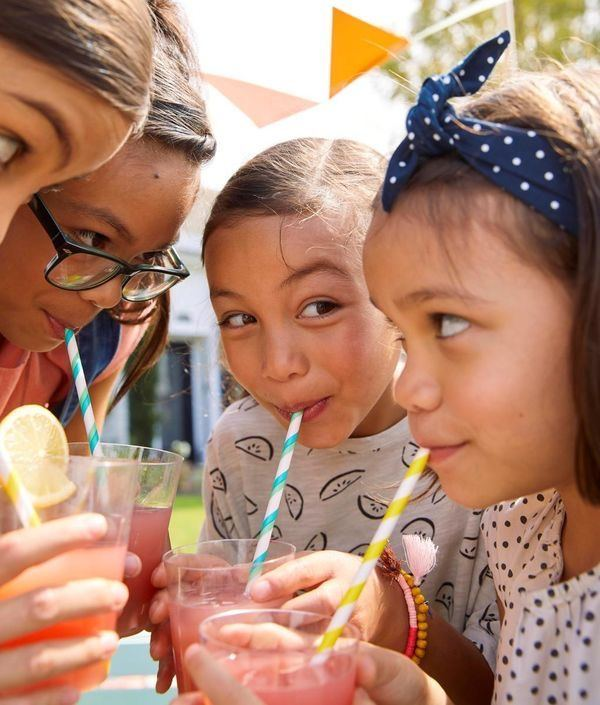
kids · 4 à 11 ansstraw. miniLes vitamines à la paille, sans sucre ajouté, avec un tableau de stickers.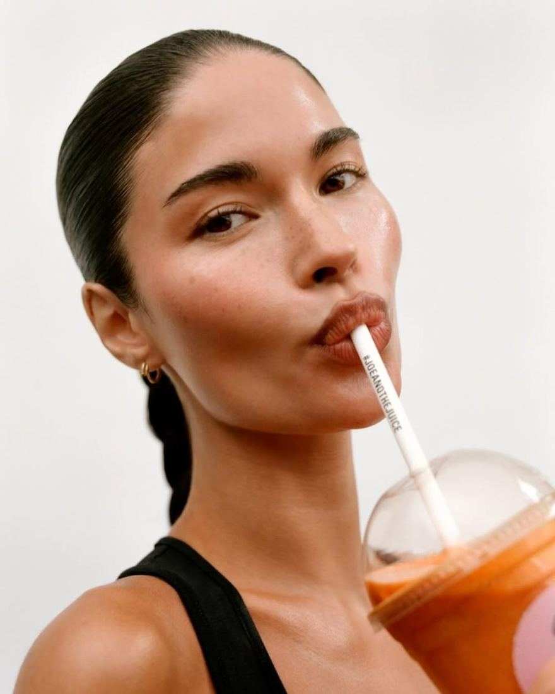
femme active · matin → soirstraw. activeMatin, avant le sport, après le sport, sommeil. Une paille par moment. santé féminine · cycle → ménopausestraw. lunaRègles, syndrome prémenstruel, projet bébé, ménopause.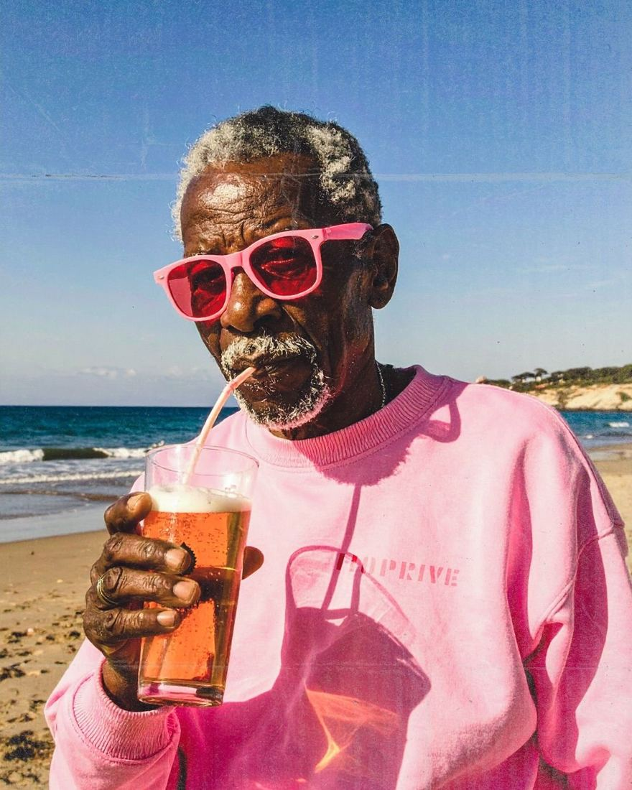
senior · 65 ans et plusstraw. silverHydratation, tonus, mobilité, vision. Rien à avaler.quatre gammes, un seul objet.
Le même étui, la même paille, les mêmes micro-billes. Chaque gamme a sa couleur, sa typo et ses actifs, dosés pour l'âge et le moment de vie.
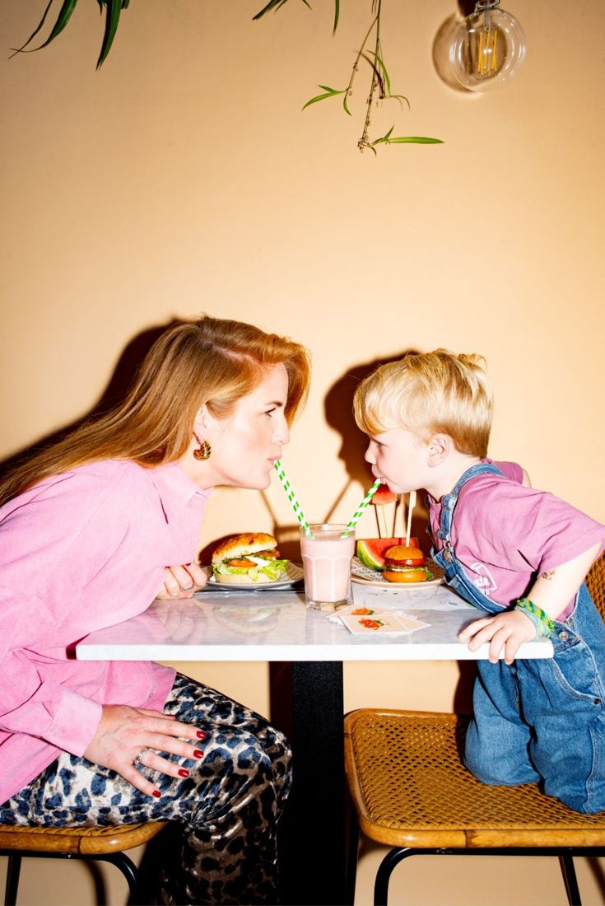
camille & léo · 16:30quatre générations, une seule paille.
famille fictive · exemple de routine
comment ça marche
technologie brevetée · [partenaire fabricant]choisis ta boisson
Eau, jus, lait, boisson végétale, thé glacé. Froide ou tiède, jamais bouillante.
bois normalement
Le liquide traverse la paille et dissout les micro-billes d'actifs aromatisées.
la dose est prise
Billes disparues = dose complète. La paille s'utilise une seule fois.
pourquoi une paille ?
Parce qu'un complément ne sert à rien s'il reste dans le placard. Le geste compte autant que l'actif.
| straw. | gélules | poudre en stick | gummies | |
|---|---|---|---|---|
| à avaler | rien, on boit | 1 à 3 gélules | à diluer | à mâcher |
| enfants & seniors | même geste à tout âge | difficile à avaler | goût souvent refusé | sucre, risque de confusion avec un bonbon |
| sucre | sans sucre ajouté | non | souvent | souvent 2–4 g |
| nomade | sachet individuel daté | pilulier | oui | pot |
| hydratation | un verre bu à chaque dose | une gorgée | un verre | aucune |
née entre un labo et une cuisine de famille.
Je m'appelle Nisrine. Mon prénom veut dire églantine, la rose sauvage.
Une fleur qui pousse partout, sans rien demander de compliqué. J'aime l'idée que straw. lui ressemble : un geste simple, qui se glisse dans n'importe quel verre, à n'importe quel âge.
Mon point de départ, c'est la science. Un master Biologie-Santé, des heures à comprendre le corps avant de parler produit. Puis la cosmétique, où j'ai été cheffe de produit : décortiquer un actif, savoir à quelle dose il fonctionne, et le traduire en une promesse claire, juste et autorisée. J'ai ensuite choisi l'entrepreneuriat et l'innovation, avec un master 2 à l'IAE Clermont-Auvergne.
Autour de moi, dans ma famille comme chez mes amies, j'entendais toujours la même chose. Les enfants refusent le sirop. Les grands-parents peinent à avaler leurs gélules. Les mères parlent de leur ménopause à voix basse. Et on oublie tous nos compléments au fond d'un placard. Le problème n'était pas l'actif. C'était le geste.
Alors j'ai cherché un geste que tout le monde fait déjà, à tout âge, dix fois par jour : boire. straw. est né de là, à Clermont-Ferrand, avec la rigueur de la science et l'envie de prendre soin de toute la famille, de 4 à 104 ans.
Nisrine
- la scienceMaster Biologie-Santé, développement de produit
- les actifsAncienne cheffe de produit en cosmétique, ingrédients actifs
- le terrainOrganisation de congrès nationaux en santé
- l'entrepriseMaster 2 Entrepreneuriat & Innovation, IAE Clermont-Auvergne
- 2026straw. la paille active, 4 gammes
questions
Je peux mélanger plusieurs gammes ?
Oui, une paille par produit et par jour au maximum. Évite de cumuler deux pailles riches en vitamine D ou en fer le même jour sans avis médical. Chaque fiche indique ce qu'elle contient.
Quelle gamme pour qui ?
mini pour les enfants de 4 à 11 ans, active pour les femmes de 20 à 45 ans qui veulent une routine du matin au soir, luna pour les grandes phases du corps féminin (règles, grossesse, ménopause), silver à partir de 65 ans.
Ça change le goût de ma boisson ?
Les billes sont aromatisées aux arômes naturels. Le goût est léger et s'accorde avec l'eau, le lait, les jus et le thé. [À valider par tests consommateurs.]
Et l'environnement ?
[Matériau de la paille et filière de fin de vie, à confirmer avec le fabricant avant lancement.]
be the first to sip.
les vitamines, à la paille !
Fini la bataille du sirop. Une paille rayée dans le verre de lait, et les vitamines passent toutes seules. Côté parents : doses adaptées aux 4–11 ans, sans sucre ajouté, sans colorant artificiel.
la bande des 4
étui semaine · 7 pailles · 8,90 €un slurp par jour, un sticker.
Dans chaque étui, une planche de 7 stickers. L'enfant boit sa paille, voit les billes disparaître, colle son sticker. Au 7e, la semaine est gagnée. La routine devient un jeu, pas une négociation.
essaie : touche un jour pour coller son sticker
formules mini
livraison offerte dès 30 € · sans engagementslurp time
moodboard · photos non libres de droits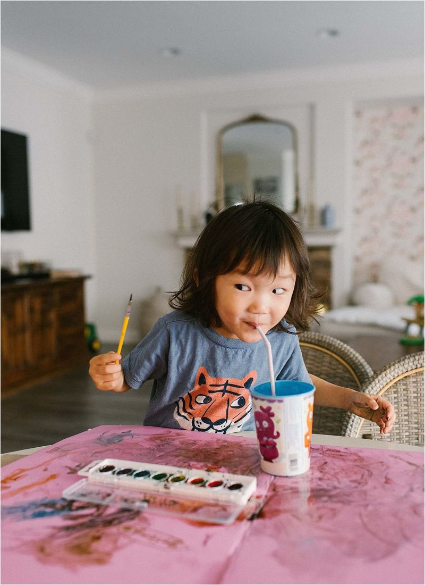
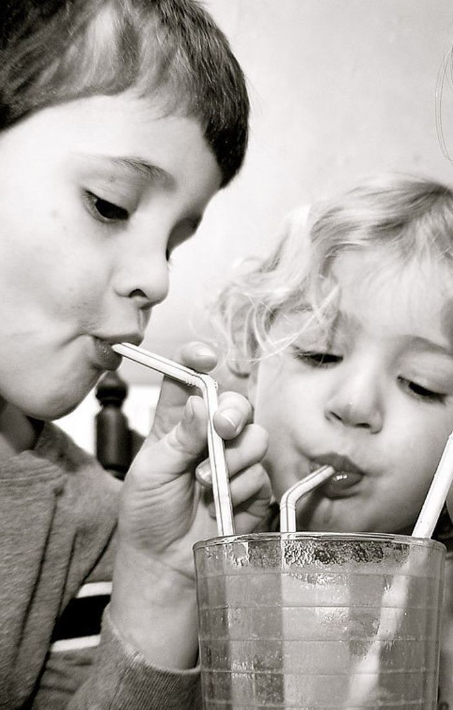
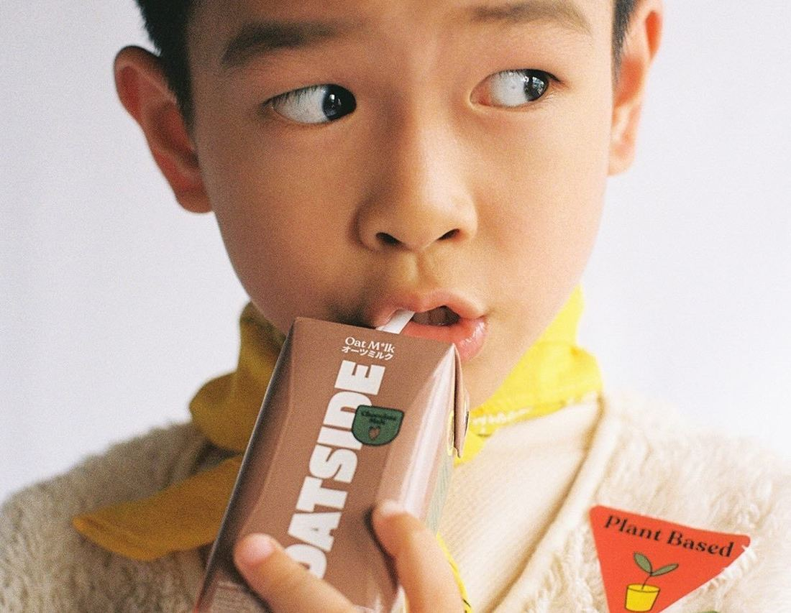
les parents en parlent
avis illustratifs · maquette, aucun client réelquestions de parents
Pourquoi à partir de 4 ans ?
Les micro-billes et le format paille demandent de savoir aspirer sans mâcher. Avant 4 ans, demande conseil à ton pédiatre. Toujours sous la surveillance d'un adulte.
Est-ce que mon enfant peut en prendre deux ?
Oui, deux gammes différentes par jour maximum (par exemple boost. le matin et dodo. le soir). Jamais deux pailles de la même gamme le même jour.
Il y a de la mélatonine dans dodo. ?
Non. La mélatonine n'est pas recommandée chez l'enfant sans avis médical. dodo. contient du magnésium, de la camomille et du tilleul, dans un lait tiède : c'est surtout un rituel.
Ça remplace une alimentation équilibrée ?
Non. Un complément alimentaire complète, il ne remplace pas. Parles-en à ton pédiatre si tu as un doute sur les besoins de ton enfant.
les autres gammes
sip your routine.
Une paille au réveil, une avant la séance, une après, une le soir. Ta boisson ne change pas, ta routine si.
une journée straw.
Rise et sleep tous les jours. Pulse et move les jours de séance. Dans la boisson que tu bois déjà.
the edit
étui semaine · 7 pailles · 9,90 €formules
livraison offerte dès 30 € · coffret découverte 4 étuis : 35 €le rituel straw.
moodboard · photos non libres de droits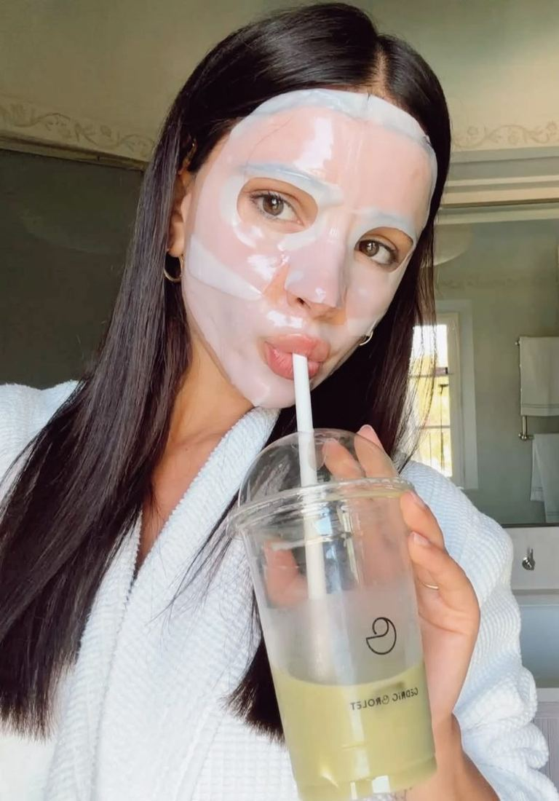
elles en parlent
avis illustratifs · maquette, aucun client réelles autres gammes
ton cycle, à chaque gorgée.
Règles, syndrome prémenstruel, projet bébé, ménopause. Quatre pailles pour les grandes phases du corps féminin. On ne promet rien que la science n'autorise : seulement des allégations de santé validées.
la roue du cycle
Touche un jour de ton cycle pour voir la phase et la paille qui l'accompagne. Exemple sur un cycle de 28 jours.
les 4 luna.
étui · 7 pailles · 9,90 €formules luna
livraison discrète · pause en un clicentre nous.
moodboard · photos non libres de droitselles en parlent
avis illustratifs · maquette, aucun client réelquestions intimes
Est-ce que luna soulage les douleurs de règles ?
Aucune allégation de santé autorisée ne permet de le dire, donc on ne le dit pas. flow. apporte du fer et du magnésium, qui contribuent à réduire la fatigue. Des règles très douloureuses méritent une consultation (endométriose, SOPK).
Je prends la pilule, ça change quelque chose ?
Sous pilule, il n'y a pas d'ovulation ni de vraie phase lutéale. flow. reste utile pendant les saignements. Demande conseil à ton médecin ou ta sage-femme pour balance.
Je suis enceinte, je peux prendre bloom. ?
bloom. est pensé pour le projet bébé et le premier trimestre. Ta sage-femme ou ton médecin t'a peut-être déjà prescrit des folates : montre-lui la composition avant.
les autres gammes
jeune depuis longtemps.
Pas de gélule à avaler, pas de pilulier à remplir. Une paille dans le verre d'eau ou le jus du matin, et vos vitamines sont prises. En prime, vous buvez un grand verre, ce dont le corps a besoin avec l'âge.
la collection silver.
étui semaine · 7 pailles · 9,90 €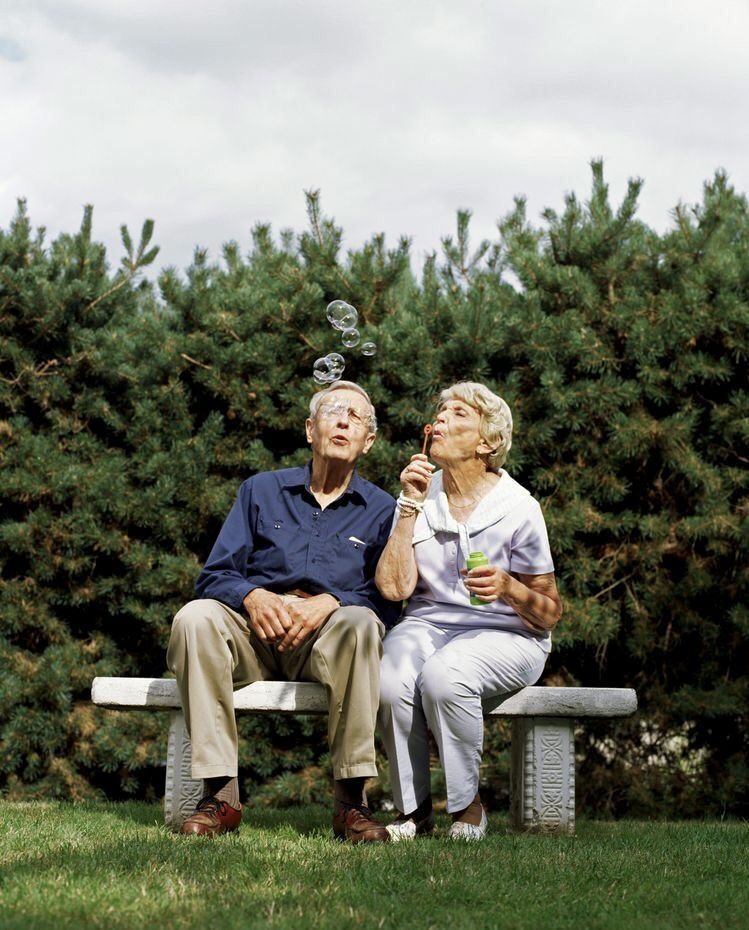
avec l'âge, on oublie de boire.
La sensation de soif diminue avec les années, alors que le corps a toujours besoin d'environ 1,5 litre d'eau par jour. Chaque paille straw. silver est parfumée et se boit dans un grand verre : deux pailles, c'est déjà un tiers de l'objectif.
essayez : touchez un verre pour le remplir
formules silver
livraison offerte · commande possible par téléphone [à confirmer]l'âge d'argent.
moodboard · photos non libres de droits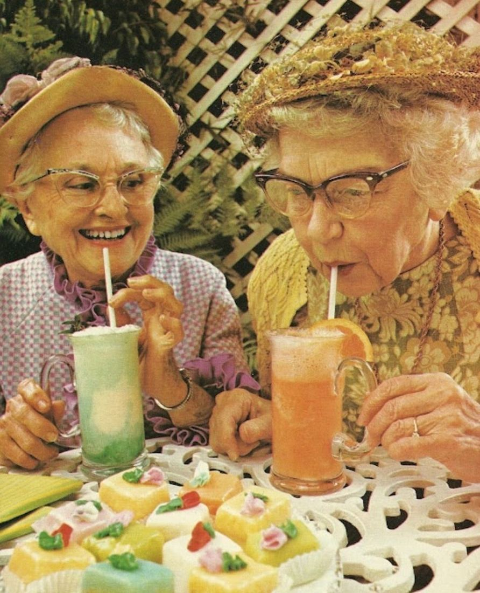
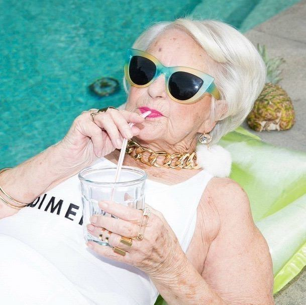
ils et elles en parlent
avis illustratifs · maquette, aucun client réelvos questions
Je prends déjà des médicaments, est-ce compatible ?
Montrez la composition à votre médecin ou pharmacien avant de commencer. C'est indispensable si vous prenez un anticoagulant (mobil. contient de la vitamine K) ou si vous suivez un régime sans sel (hydra. contient du sodium).
Mes enfants peuvent-ils commander pour moi ?
Oui. L'abonnement peut être payé par un proche et livré à votre adresse, chez vous ou en résidence. [Fonction à confirmer.]
J'ai du mal à aspirer, est-ce adapté ?
La paille demande la même force qu'une paille classique. En cas de troubles de la déglutition, demandez l'avis d'un professionnel de santé avant utilisation.